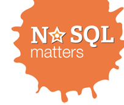

En el pasado Sudoers BCN, más concretamente en las cervezas post sudoers, mantuve una interesante conversación con una persona que actualmente trabaja como administrador de sistemas freelance. Durante la conversación me contó que antiguamente trabajaba para una gran empresa como técnico, pero que llegado a cierto punto, para poder seguir evolucionando (tanto económicamente como profesionalmente) se le requería que cambiase su rol a un perfil de gestión. Este tipo de cambio no le gustó, y fue el detonante por el cual decidió hacerse administrador de sistemas freelance, y así dedicarse en su totalidad al mundo técnico sin tener ningún tipo de limitación impuesta por terceros.
Leer más…
Comentarios

Continuando con los artículos sobre la NoSQL matters Barcelona, os traemos las últimas novedades sobre la conferencia.
Para los que se perdieron los anteriores artículos, se trata de unas conferencias sobre NoSQL, en general, con charlas de ponentes de primera línea, tanto desarrolladores de los motores como desarrolladores que los utilizan para sus aplicaciones.
La próxima NoSQL matters Barcelona tendrá lugar el 21 y 22 de noviembre en la Casa de la Convalescència. Recordad que siempre podéis contactar con ellos vía Twitter en @nosqlmatters y que podréis seguir el evento con el hashtag #nosql14.
Leer más…

Para finalizar esta serie de Gene Kim, presentamos la traducción de su tercer patrón DevOps favorito. En este patrón, presenta el problema de la estandarización en los entornos donde los proyectos son desplegados, y cómo lidiar con ellos, aplicando una técnica ágil, tratando de no olvidar las necesidades de negocio.
Leer más…
Comentarios
En muchas redes corporativas me estoy encontrado que una manera que tienen los administradores de controlar la actividad de sus usuarios es bloquear el acceso de los clientes a ciertos puertos mediante reglas de firewall (por ejemplo denegar toda conexión al puerto 22 o solo permitir conexiones al puerto 80 o 443). Medida para nada afectiva, ya que no garantiza que el usuario no se conecte al servicio no deseado, sino que no se conecte al puerto por defecto de dicho servicio. Para saltarse esta restricción es tan sencillo como configurar el servicio en uno de los puertos permitidos.
Si bien es cierto que puede ser bastante molesto, ya que obliga a modificar configuraciones, puede suponer un problema si ya tenemos un servicio activo en el puerto requerido. Esto me motivó a buscar la manera de, a través de un único puerto de un servidor, se pudiera acceder a diversos servicios.
Leer más…
Comentarios
Hace más de un mes publicamos un mensaje del equipo de NoSQL matters anunciando la próxima NoSQL matters Barcelona, que tendrá lugar el 21 y 22 de noviembre en la Casa de la Convalescència. La NoSQL matters es una de las mejores conferencias para enterarse y aprender sobre NoSQL y los distintos motores que existen y que se están desarrollando. Sus organizadores ponen un gran esfuerzo en tener a los mejores ponentes, que suelen ser grandes expertos en los diferentes motores en los que trabajan. Recordad que siempre podéis contactar con ellos vía Twitter en @nosqlmatters y que podréis seguir el evento con el hashtag #nosql14.
Hoy traemos algunas novedades sobre las entradas y los conferenciantes para aquellos interesados.
Leer más…
Comentarios